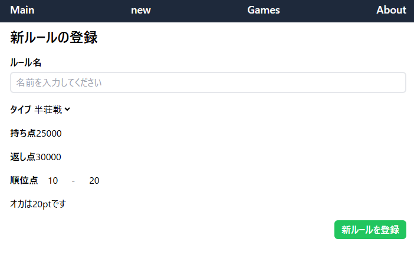
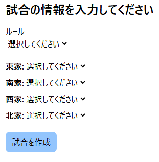
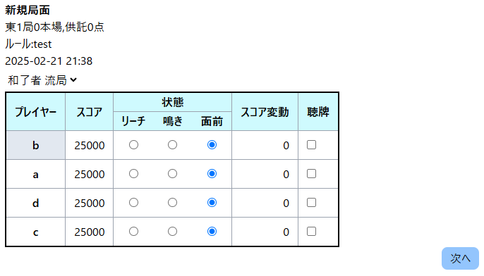
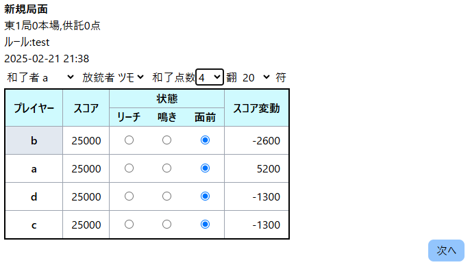

麻雀統計管理アプリ
このアプリについて
github
麻雀の統計を管理するアプリです。一部機能のみの実装です。
私自身が麻雀をたしなむのですが、その際に簡単な統計を取りたいと思い、作成しています。
現在は、プレイヤーの登録、ルールの登録、局ごとの成績の記録ができます。
また、このアプリの開発環境、使用ライブラリは以下の通りです。
- React 18
- Next.js 14
- Tailwind CSS
- Tailwind Merge
- Prisma
- TypeScript
複雑な構造になりすぎて機能追加ができなくなったので開発を中止
もっと勉強して元気が出たら作り直すかもしれません。
アプリの画面
これはルールの登録画面です。ここでは麻雀のルールを登録します。

試合の登録を開始すると、この画面が表示されます。ここでは事前に登録しておいたプレイヤー、ルールを選択します。


これらは、局ごとの結果を記録する画面です。
スコア変動は自動で記録されます。 02/21現在では本場による点数の変化が記録されません。
今後の実装予定
- 局ごとの結果の修正
- 統計の表示
- ルールの修正
- 登録された試合データの表示